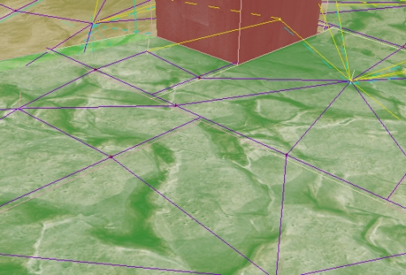

UDN
Search public documentation:
NavigationMeshPathDebuggingCH
English Translation
日本語訳
한국어
Interested in the Unreal Engine?
Visit the Unreal Technology site.
Looking for jobs and company info?
Check out the Epic games site.
Questions about support via UDN?
Contact the UDN Staff
日本語訳
한국어
Interested in the Unreal Engine?
Visit the Unreal Technology site.
Looking for jobs and company info?
Check out the Epic games site.
Questions about support via UDN?
Contact the UDN Staff
导航网格物体路径调试
概述
路径调试渲染

- 红色的表面是指障碍物网格物体的表面(AI不能在其上面行走的表面)。
- 绿色的表面是可以行走的表面(导航网格物体本身的一部分)。
- 在多边形之间沿着边界的紫色的线是指多边形之间的连接。如果在两个邻近的多边形之间没有紫色的线，那么AI将不能从一个多边形到另一个多边形。
- 其它的不同边缘类型的线(比如，黄色的虚线)。在这个例子中，黄色的虚线是指条状盖板的边缘。
- bDrawEdgePolys -当它的值为TRUE时，将会从边缘的中心向连接两个多边形的边缘的中心描画一条线。这对于调试哪些多边形正在和哪些边连接是有用的。这里是打开这项的屏幕截图：

- bDrawPolyBounds -当这项为真时，将会描画黄色的线框，它是指计算出的每个多边形的边界。屏幕截图：

bDebugConstraintsAndGoalEvals
[0515.02]Log:------- PATH CONSTRAINT STATS(路径约束数据统计) -------- [0515.02]Log:Processed:43 ThrownOut:0 (0.00% thrown out) AddedPathCost:0.00 (0.00% total) AddedHeuristic:0.00 (0.00% total) - (NavMeshPath_MinDistBetweenSpecsOfType_0) [0515.02]Log:Processed:43 ThrownOut:0 (0.00% thrown out) AddedPathCost:0.00 (0.00% total) AddedHeuristic:175.00 (100.00% total) - (NavMeshPath_Toward_0) [0515.02]Log:-------------------------------------- [0515.02]Log:TotalThrownOut:0 TotalAddedDirectCost:0.00 TotalAddedHeuristicCost:175.00 [0515.02]Log:------- GOAL EVALUATOR STATS -------- [0515.02]Log:Threw Out 10 (out of 11 processed (90.91%)) (Responsible for 100.00% of all nodes thrown out) - NavMeshGoal_At_0 [0515.02]Log:---------------------------------------从这个输出数据中，您可以获得很多信息。比如，如果我们在路径约束类表中有一个故障限制，它拒绝了所有的节点，通过查看统计数据我们可以看到那是一个错误行为。这也会输出关于增加系统消耗的约束，以便您可以看到哪个约束对路径检索由最大的影响等…..。
bUltraVerbosePathDebugging

- Red lines(红线) -指出了被拒绝的路径行走路径。
- Red Text(红色文字) -它是和那个行走失败的路线相对应的输入到日志输出行中进行查找的关键字。比如，如果您在边缘上看到C:21，您或许想知道AI为什么不能通过，可以在您的日志窗口中输入C:21进行搜索，然后您便找到原因。以下是个日志行的实例： [0061.15]Log:PATH_DEBUG_MESSAGE[C:21]:边缘不支持这个实体(支持返回为FALSE) Edge:FNavMeshEdgeBase (Len:30.00 EffecLen:30.00)。
- Green lines(绿线) -是指成功地从一个多边形穿越到另一个多边形。
- White Text(白色字体) -是用于输入日志输入命令行关键字，该关键字和调用EvaluateGoal 失败(没有终止)相对应。一个实例，日志行(log line)： [0061.15]Log:Poly (P:16) (polyctr:X=13905.000 Y=-13110.000 Z=129.000)仅是NavMeshGoal_At_0的给定状态[EvaluateGoal返回0]。
- DebugCoordinateSystem(调试坐标系统) - 在SearchStart处描画。
[0132.83]Log:PATH_DEBUG_MESSAGE[C:22]:边缘不支持这个实体(支持返回为FALSE) Edge:FNavMeshCoverSlipEdge (Actor:CoverLink_8 RelItem:0 MoveDir:-1)这里是另一个屏幕截图，展示了正在工作中的调试模式的较宽的视图:
 在这个模式中，也会打印许多其它的相关信息，比如，在每个路径步伐中设置大小，以及路径检索终止的原因。这里是一些示例输出：
在这个模式中，也会打印许多其它的相关信息，比如，在每个路径步伐中设置大小，以及路径检索终止的原因。这里是一些示例输出：
[0132.82]Log:Poly (P:108) (polyctr:X=12828.750 Y=-15367.500 Z=-127.000) was just given status [EvaluateGoal returned 0] by NavMeshGoal_SquadFormation_0 [0132.82]Log:PATH_DEBUG_MESSAGE[C:221]:Path constraint NavMeshPath_WithinTraversalDist_0 EvaluatePath rejected this edge! Edge:FNavMeshEdgeBase (Len:60.00 EffecLen:90.00)。 [0132.82]Log:PATH_DEBUG_MESSAGE[C:222]:边缘不支持这个实体(支持返回为FALSE) Edge:FNavMeshEdgeBase (Len:15.00 EffecLen:30.00)。 [0132.82]Log:PATH_DEBUG_MESSAGE[C:223]:边缘不支持这个实体(支持返回为FALSE) Edge:FNavMeshEdgeBase (Len:15.00 EffecLen:30.00)。 [0132.82]Log:+++Finished path step 108!, Openlist now has 2 nodes in it. [0132.82]Log:Poly (P:109) (polyctr:X=12105.000 Y=-13860.000 Z=127.750) was just given status [EvaluateGoal returned 0] by NavMeshGoal_SquadFormation_0 [0132.82]Log:PATH_DEBUG_MESSAGE[C:224]:Path constraint NavMeshPath_WithinTraversalDist_0 EvaluatePath rejected this edge! Edge:FNavMeshEdgeBase (Len:60.00 EffecLen:90.00)。 [0132.82]Log:PATH_DEBUG_MESSAGE[C:225]:边缘不支持这个实体(支持返回为FALSE) Edge:FNavMeshEdgeBase (Len:15.00 EffecLen:30.00)。 [0132.82]Log:+++Finished path step 109!, Openlist now has 1 nodes in it. [0132.82]Log:Poly (P:110) (polyctr:X=13800.000 Y=-14482.500 Z=-127.000) was just given status [EvaluateGoal returned 0] by NavMeshGoal_SquadFormation_0 [0132.82]Log:PATH_DEBUG_MESSAGE[C:226]:Path constraint NavMeshPath_WithinTraversalDist_0 EvaluatePath rejected this edge! Edge:FNavMeshEdgeBase (Len:60.00 EffecLen:120.00)。 [0132.83]Log:PATH_DEBUG_MESSAGE[C:227]:边缘不支持这个实体(支持返回为FALSE) Edge:FNavMeshEdgeBase (Len:15.00 EffecLen:30.00)。 [0132.83]Log:PATH_DEBUG_MESSAGE[C:228]:Path constraint NavMeshPath_WithinTraversalDist_0 EvaluatePath rejected this edge! Edge:FNavMeshEdgeBase (Len:60.00 EffecLen:120.00)。 [0132.83]Log:PATH_DEBUG_MESSAGE[C:229]:Path constraint NavMeshPath_WithinTraversalDist_0 EvaluatePath rejected this edge! Edge:FNavMeshEdgeBase (Len:75.00 EffecLen:105.00)。 [0132.83]Log:PATH_DEBUG_MESSAGE[C:230]:边缘不支持这个实体(支持返回为FALSE) Edge:FNavMeshCoverSlipEdge (Actor:CoverLink_48 RelItem:0 MoveDir:-1) [0132.83]Log:+++Finished path step 110!, Openlist now has 0 nodes in it. [0132.83]Log:+++++++++ STOPPING PATH SEARCH -- Nodes on openlist:0 Reason:Path finished, and DetermineFinalGoal returned TRUE.. search was a success!当然，已经建立了一个可以轻松地在游戏运行时启动特定AI上的调试模式的快速工具。 VerbosePathDebug 是个控制台命令，您可以运行它，从而可以描绘出玩家正在看向的地方，并且会设置路径中的任何pawns的bUltraVerbosePathDebugging为真。 当为一个AI启用这个工具并且那个AI完成了寻路时，之前的非常冗长的调试信息将会被冲掉，从而为新的信息让出控件，同时游戏将会处于仅玩家模式，是您可以挖掘更多的信息。请记住，如果在一帧中发生了多次寻路，那么您看到的描画的屏幕上的路径是最后一次发生寻路的路径。